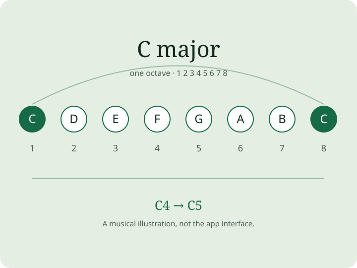

Find your notes
Choose a key and a scale. Compare note names, degrees and intervals, then tap notes to hear them.
For iPhone, iPad and Mac
Find a scale, hear its notes and connect the pattern to your instrument. A practical visual reference for guitar, bass, piano, ukulele and mandolin.
Explore on the App StoreGuitar · Bass · Piano · Ukulele · Mandolin

Hear the C major example
Illustrative synthesized audio. Notes: C4, D4, E4, F4, G4, A4, B4, C5.
Choose a key and a scale. Compare note names, degrees and intervals, then tap notes to hear them.
With Premium, create custom tunings and scales, save study setups and make the reference fit your instrument.
Read a focused lesson, listen to its example and then try the phrase yourself. Use the tuner and metronome to prepare.
Scale and chord exploration, note audition, a chromatic tuner and a metronome. Optional purchases unlock more tools and lessons.
Advanced tools, custom scales and tunings, and the full lesson catalog with a permanent purchase. No subscription required.
Includes the Premium tools and lessons while active, plus Max Daily, full ear-training sessions and the Mastery Map. Monthly and yearly options; eligible yearly plans offer a seven-day trial.
Premium means features shared by Pro and an active Max subscription. Prices and eligibility are shown by the App Store for your country.
Pro includes the advanced tools and lesson catalog. Max Daily, full ear-training sessions and the Mastery Map require an active Max subscription.
The app provides visual examples, sound, practice tools and exercises. Playback and on-screen answers are not certification of your physical performance.
The visual reference supports guitar, bass, piano, ukulele and mandolin. The app interface is available in English, Brazilian Portuguese, Spanish, German, Japanese and Simplified Chinese.
Get help with sound, tunings, lessons or a purchase. Tell us the device, app version and what happened.
Open support